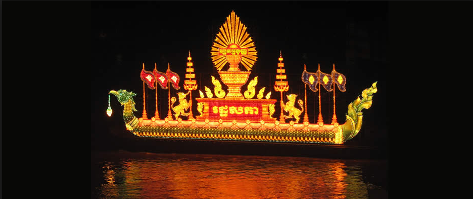
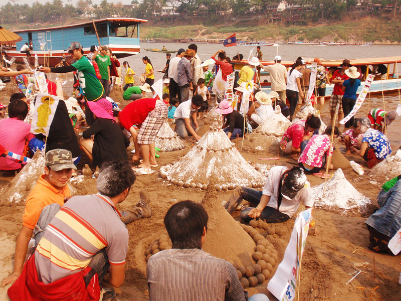

×
Home
Spring
Summer
Fall/Autumn
Winter
Contact Us
☰
Cambodia
Vesak Bochea – To Celebrate Lord Buddha
Vesak (Pali: Vesākha, Sanskrit: Vaiśākha), also known as Buddha Jayanti,Buddha Purnima and Buddha Day, is a holiday traditionally observed by Buddhists...
Water Festival – To Honor Naval Forces

A true water culture, Cambodia’s ancient relationship between the Mekong, the people and the land dates back thousands of years. The famed navies of the Angkorian Kings...
Khmer New Year - End Of Harvest Season
Cambodian New Year (Khmer: បុណ្យចូលឆ្នាំថ្មី) (Choul Chnam Thmey, literally "Enter New Year"), is the name of the Cambodian holiday that celebrates the traditional Lunar New Year.
China
China Dragon Boat Festival
Dragon Boat Festival (Longzhou Jie in Chinese pinyin), also known as Duanwu Festival, is one of the most important traditional festivals in China. There are many folk activities held during the festival like
Japan
Gion Matsuri
Arguably, this is known as the mother of all Japanese celebrations. This festival began as part of a purification ritual to appease the gods thought to cause fire, floods and earthquakes… Eeps
Sendai Tanabata Matsuri
Tanabata festivals, also known as "star festivals", are held across Japan on the 7th day of the 7th month of the year, when, according to Chinese legend, the two stars Altair and Vega cross paths.
Laos
Buddhist Lent
This is the beginning of the three-month long Buddhist Lent. All monks stop travelling and stay at temple for prayer and meditation. It's also time for ordination of men entering a monkhood.
Laos New year

Lao New Year is a popular English name for a traditional celebration known in Laos as "Pi Mai" or "Songkran" (in Lao language). Lao New Year widely celebrated festival in Laos...
Myanmar
Kachin Manaw Festival
With the Filipinos’ fun-loving spirit and creativity, there’s a handful of grand town fiestas and vibrant festivals celebrated across the Philippines. Among the numerous festivals in the country,...
Shittaung Pagodas Festival
Among the most popular festival of the Rakhine people of Myanmar, the Shittaung Pagoda Festival is held in April every year. The festival is a traditional pagoda festival where candles are lit...
The Origins Of The Thingyan Festival
The Thingyan Festival, from 13th to 16th April each year; and signifies the end of the hot, dry season, as well as the chance to take stock, reflect and wash away the previous year’s misgivings or bad luck.
Thadingyut Festival
The Thadingyut Festival (Lighting Festival of Myanmar) is held on the full moon day of the Myanmar Lunar month of Thadingyut. It marks the end of the Buddhist lent and is the second most popular festival
Philippines
Lechon Festival
The Lechon Festival in the town of Balayan is one of the most-awaited festivities in the Philippines. People across the world would come to Balayan just to experience this exhilarating festival.
Singapore
Art Festival
As Singapore’s annual pinnacle arts festival, the Singapore International Festival of Arts (SIFA) presents captivating and diverse works across theatre, music, dance, film and visual arts...
Hari Raya Puasa Festival
Hari Raya Puasa, also known as Hari Raya Aidilfitri or Eid al-Fitr, but more commonly known as just Hari Raya or Raya amongst Singaporeans, is celebrated by people of the Muslim faith.